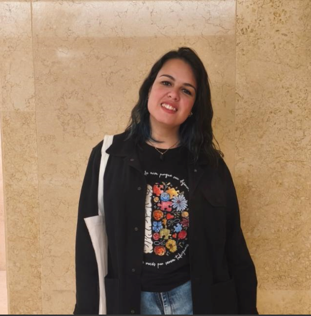

Olá, eu sou Fernanda Henriques
Programadora Backend apaixonada por tecnologia e soluções criativas. Atualmente, aprofundo meus conhecimentos em Python, Java e C#, além de explorar desenvolvimento web e ciência de dados.

Programadora Backend apaixonada por tecnologia e soluções criativas. Atualmente, aprofundo meus conhecimentos em Python, Java e C#, além de explorar desenvolvimento web e ciência de dados.